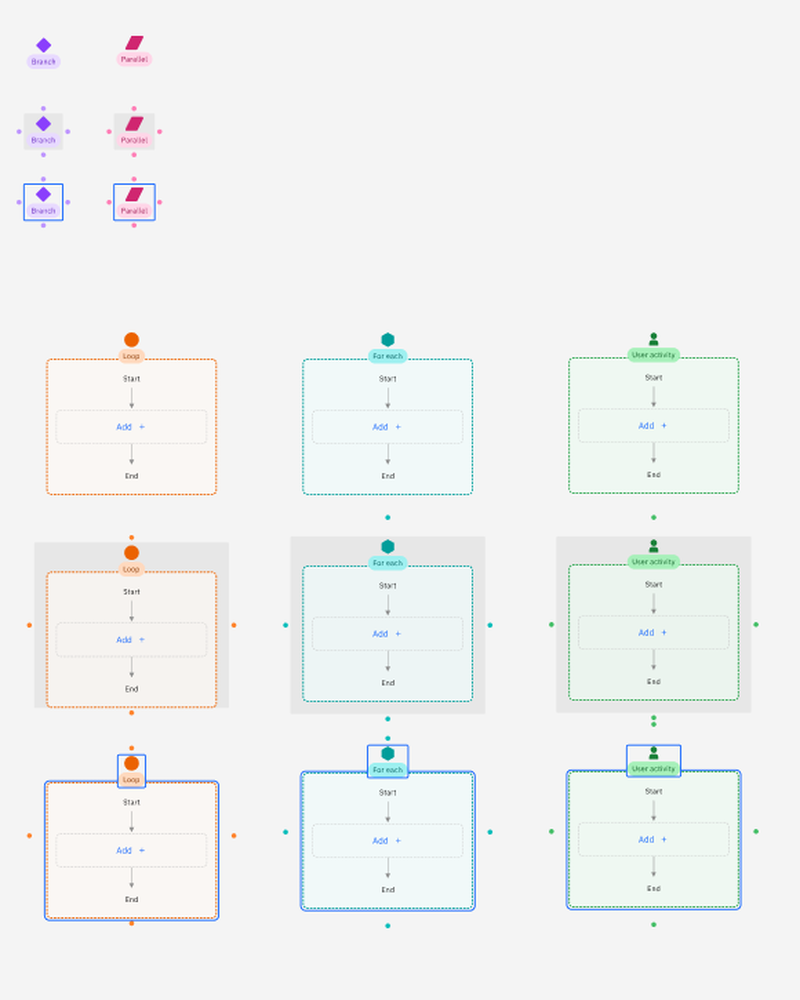
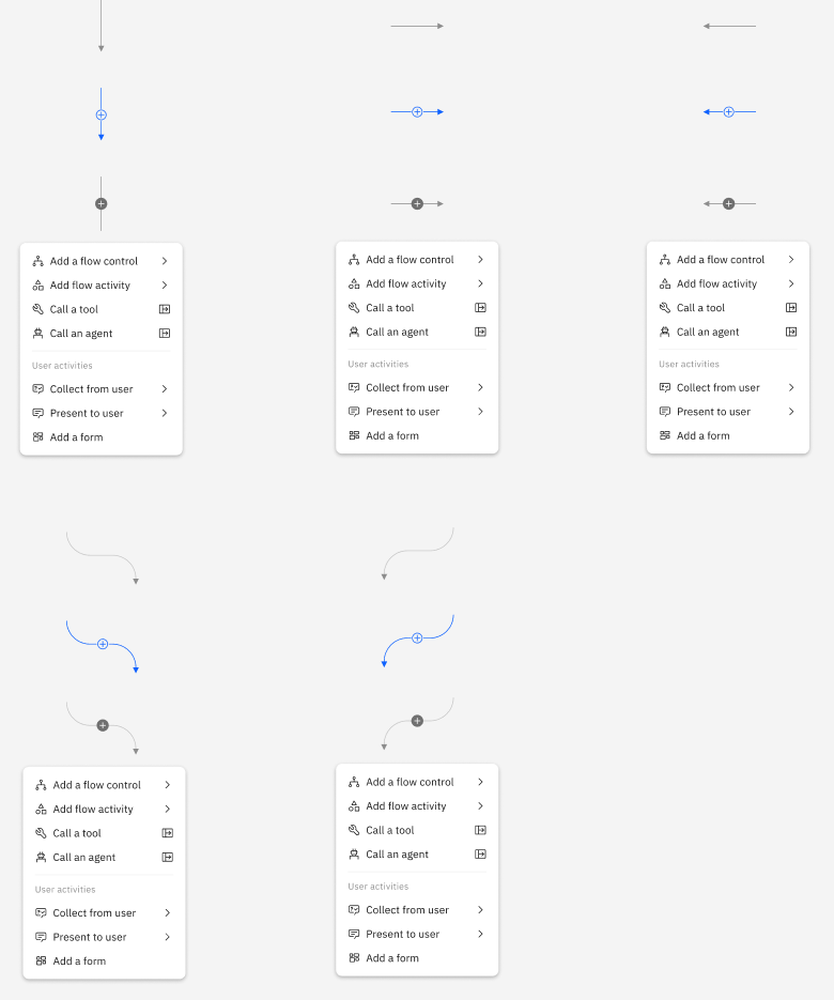
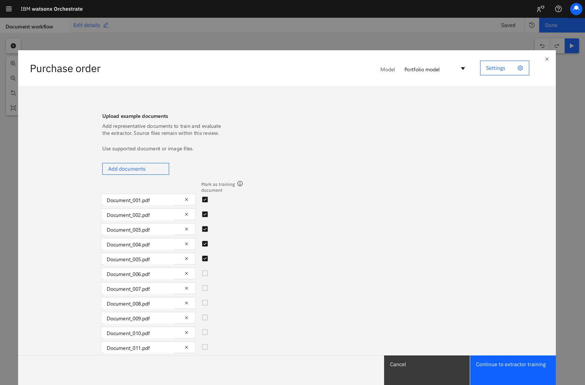
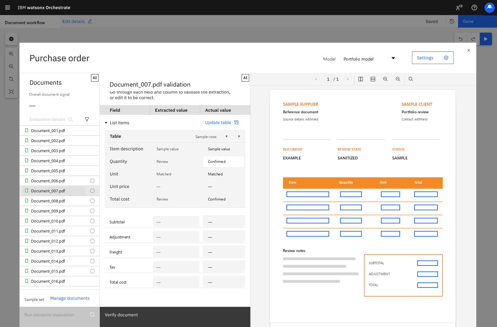
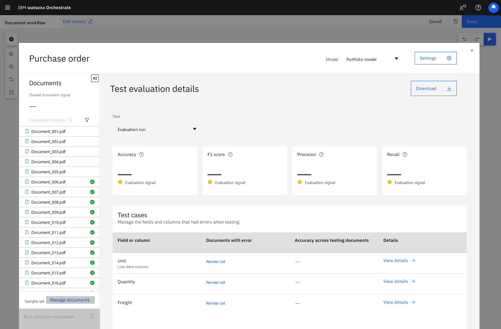

IBM watsonX Orchestrate · 2024–present
Agentic workflow canvas.
A protected story about shaping the shared language for building, inspecting, and improving AI workflows, from reusable canvas mechanics to human review and quality evaluation.
Complexity needed a visual grammar.
The early system work joined Carbon discipline with a reusable canvas language: nodes that could signal different kinds of work, connectors that made insertion and direction visible, and controls that could hold branching, repetition, parallel paths, and user activity.


Evidence boundary: these boards show design-system and interaction vocabulary. They do not assert that Canvas 1 was released in this exact form.
Human work belongs inside the workflow model.
A user activity could not be treated as an interruption outside automation. It needed a clear beginning, a bounded task, enough context for judgment, and a return path into the flow.
Context travels with the task
The person reviewing a step needs the source material, state, and decision boundary close together.
Judgment has a return path
Review is part of the model only when the correction can move the workflow forward without hiding uncertainty.
The later work moved closer to the code.
Specification rigor became implementation-aware practice: understanding constraints, separating interface iteration from backend dependencies, and documenting reusable states so design intent could survive handoff.
Reusable patterns
Shared states and components reduced one-off interaction decisions across related workflow experiences.
Constraint-aware iteration
Closer collaboration with implementation made technical limits visible earlier without turning design exploration into a release claim.
Document Processing made the system accountable to uncertainty.
Document Processing is a focused chapter inside the broader IBM watsonX Orchestrate story. Classification, extraction, human review, and evaluation tested whether specialized work could remain legible inside the shared workflow model.
Make the trust loop visible.
A document first had to be identified, matched to a schema, read for fields and tables, reviewed where confidence was low, and evaluated against a known reference.
I joined the work in 2025 and ramped up alongside the existing design team. I helped translate earlier product concepts into the newer agent model, delivered specifications and interaction designs for Document Classifier and Extractor, and contributed shared patterns across the canvas and component library.
Evidence boundary: source notes include ambitious scale, accuracy, review-rate, and efficiency targets. This chapter treats those as requirements, not results. Source data and prototype values are physically removed from the media.



Uncertainty needed somewhere to go.
A confidence score can flag risk, but it cannot resolve an incorrect document type, a missed field, or a misread table by itself. The workflow needed a path from automated output to human judgment and back into the next design decision.
Identify the document type and prepare the right schema.
Read fields and table structures into usable data.
Put low-confidence output beside the source for judgment.
Compare output with a known reference and locate errors.
Use the evidence to revise the schema or working set.
classify → extract → review → evaluate → improve
Four decisions made the parts feel like one product.
Different document types, schemas, tables, review states, and quality signals needed a consistent structure without flattening their specialized work.
Keep source and output together
Review works when a person can compare the document and extracted value without reconstructing context.
Make uncertainty actionable
Confidence and quality concepts needed to point toward the field, document, or configuration requiring attention.
Reuse the workflow language
Shared states and Carbon-aligned patterns kept specialized document work connected to the surrounding canvas.
Separate goals from evidence
Thresholds, table support, history, and assignment rules are described as design or technical scope, not demonstrated results.
My role grew as the work moved from setup to trust.
I joined a platform already in motion. My contribution expanded from translating and specifying Classifier and Extractor work to connecting review patterns and serving as lead designer for Accuracy Evaluation.
Classifier and Extractor
I helped convert earlier concepts into the agent model and delivered interface specifications, interaction detail, Carbon alignment, and reusable patterns.
Human review
I supported requirements and patterns where document context, low-confidence output, and a person's correction needed to stay together.
Accuracy Evaluation
I led the design direction for the evaluation workflow, connecting test-set preparation, ground truth, review, and quality inspection.
Cross-team continuity
I worked across adjacent product and system teams, and later carried additional Document Processing epics while design coverage was reduced.
Trust comes from a workflow people can inspect.
The combined Document Extractor and Evaluation experience released in July 2026. The release connected extraction with the quality-review direction described here.
Confidence alone is not enough. A person needs to see uncertainty in context, correct it without leaving the task, and understand whether the next version is better.
Evidence boundary: this chapter connects the verified feature package to the broader workflow model. It does not expand the approved release or outcome claims.
A shared language has to hold both automation and judgment.
The throughline is not a single canvas screen. It is the relationship among system vocabulary, specialized feature work, human review, and implementation constraints.
Protected private candidate · local sanitized assets · no public implementation authorized